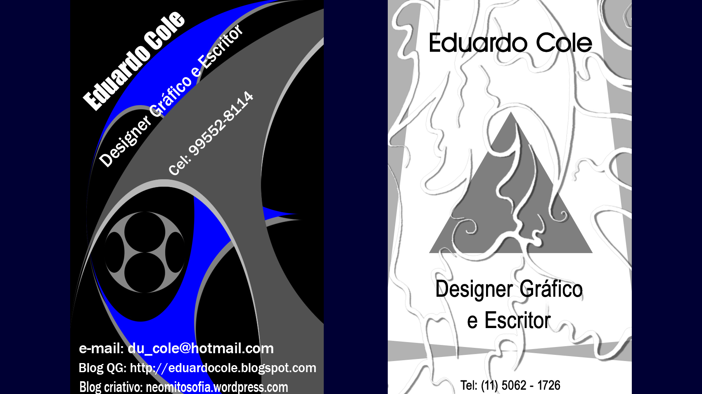
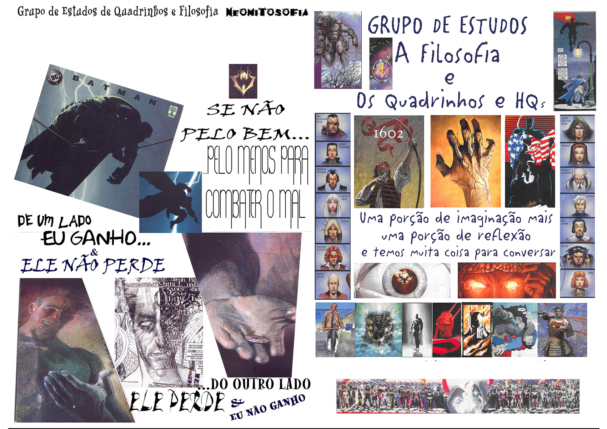
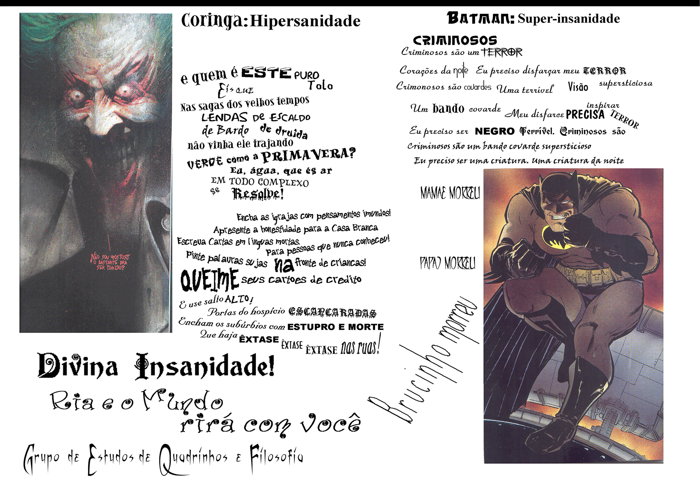
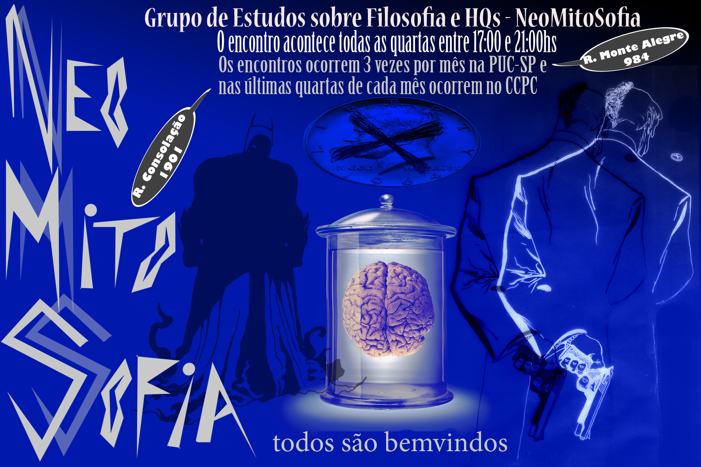
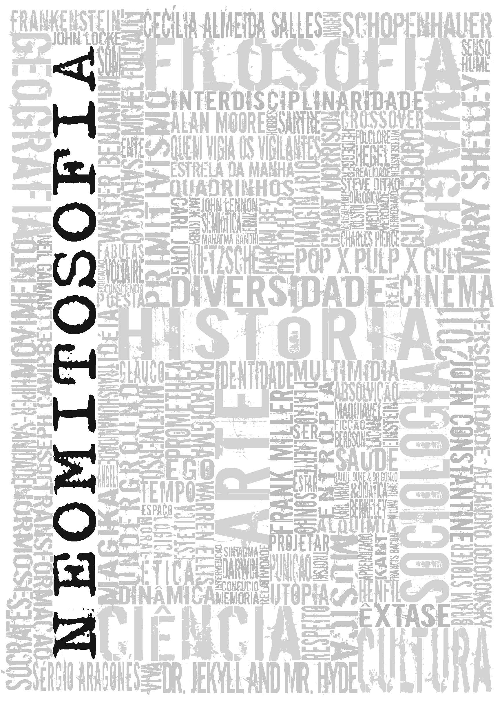
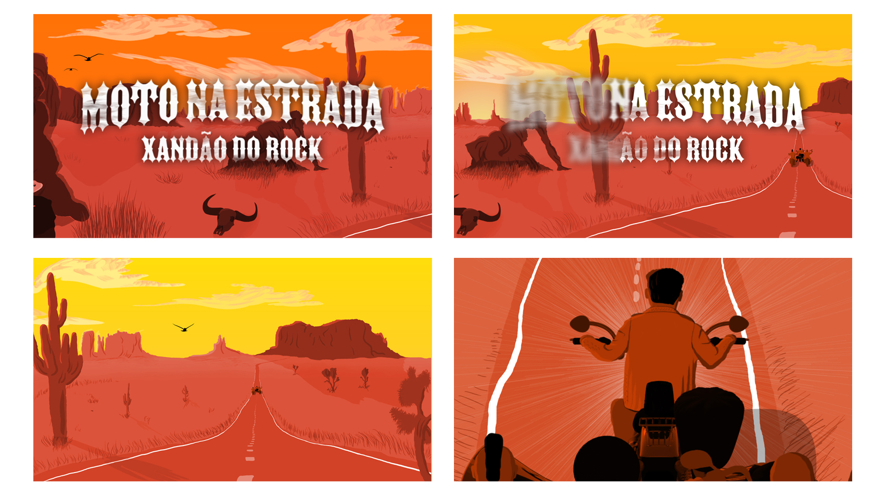
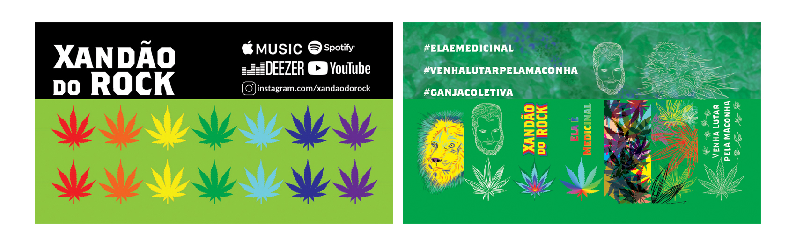
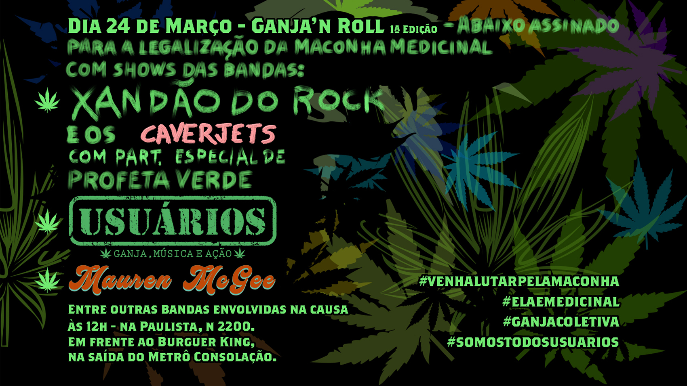
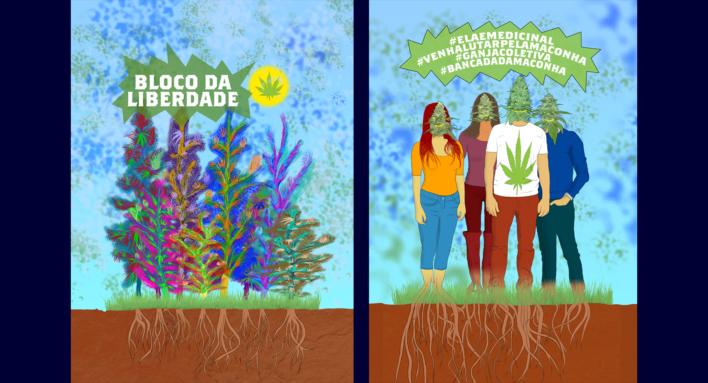
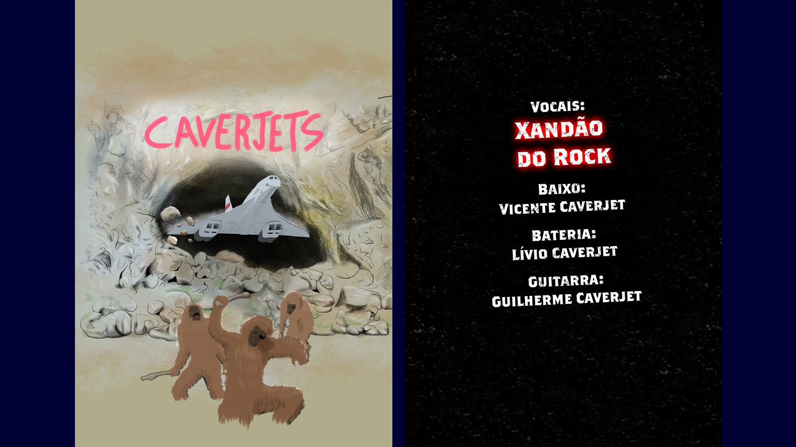

Before graduating from Graphic Design, I was already taking my first steps in visual programming, creating my first business cards as a designer and writer.
My first cards, including the one on the right being made before buying my first cell phone.
The study group NeoMitoSofia, generated several visual productions, besides the website, I created some visual communications for the meetings that we promoted. Arts made mostly from digital collages.
First page of the promotion of the first philosophical café organized by NMS.
Second page of the promotion of our first philosophical coffee.
A flyer to advertise our meetings.
The cover of the project we wrote for the contest "VIVA LEITURA" - "LIVE READING"
Recently a high school friend of mine created a rock band and hired me to develop various visual communications for him. Beginning with the design of an animated video clip, inspired by the game 'Full Throttle' (1995). Here are some initial frames of this animation that is still in process.
Initial frames of the animation "Moto na Estrada" - "Motorbike on the Road".
Then I also made a card
I also made a flyer
A t-shirt for an event
And A t-shirt for the band